Your whole collection,
from SID to FLAC.
SoniqBoom is a self-hosted music server that plays the formats other servers forget — chiptune, tracker modules, SID, MIDI, console rips — alongside FLAC, DSD and every modern codec, streamed to any browser on your network.
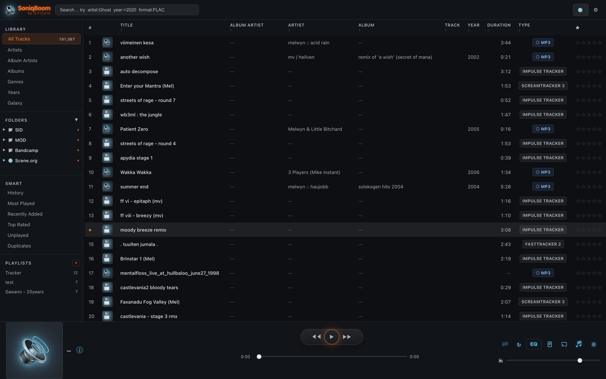
01What's inside
One server for the everyday lossless library and the weird corners of music history.
Chiptune & console
SID, NSF, SPC, GBS, VGM, AY, KSS, SAP, GYM, HES — rendered on the fly and played in the browser.
Tracker modules
MOD, XM, IT, S3M, MED, AHX, HivelyTracker and ~20 module formats, with per-channel VU meters.
AdLib / OPL FM
The sound of DOS gaming — id Software IMF, ROL, CMF and more, through an OPL2 synthesiser.
Lossless & DSD
FLAC, ALAC, WAV, AIFF, WavPack — plus 1-bit DSD (DSF / DFF / WSD) and every common lossy codec.
Visual library
Channel-level VU meters, a live decode signal-chain, and the Library Galaxy star-field of your formats.
Network libraries
Attach FTP, SMB and WebDAV shares straight from the admin panel — no operating-system mount required.
OpenSubsonic API
Connect Amperfy, Symfonium, DSub, Feishin and the wider Subsonic app ecosystem to your server.
Internet radio
A curated demoscene & chiptune station pack plus the worldwide Radio Browser directory, with live now-playing titles.
Casting Beta
Send playback to Chromecast, AirPlay and DLNA receivers — even rendered SID and tracker tunes.
Multi-user & PWA
Accounts with roles, instant-mix radio, smart playlists, offline downloads, time-synced lyrics, scrobbling, and an installable progressive web app.
02Install & first run
SoniqBoom runs on macOS and Linux. Point it at your music, hit scan, and open it in any browser.
brew install git; Linux:
apt install git or your distro's equivalent). The installer fetches everything else — ffmpeg and
all the renderers. Any modern desktop or mobile browser can play the library; plan for memory that grows with
your collection, since the whole index lives in RAM (see System notes).macOS & Linux — one-shot install
# clone, install everything, and start the server git clone https://github.com/SFCyris/SoniqBoom.git cd SoniqBoom bash install.sh # Python, ffmpeg, and ALL retro renderers bash run.sh # starts the server on port 8080
install.sh installs sidplayfp (SID), fluidsynth (MIDI),
libopenmpt (trackers), uade (AHX), libgme (console
chiptunes) and adplay (AdLib/OPL) — on macOS via Homebrew, on Linux via your
distribution's package manager (apt, dnf, pacman or zypper). The HivelyTracker decoder is
bundled with SoniqBoom itself. Nothing to pick, nothing to add later — every format in this
guide plays out of the box.Or run it in Docker
One container ships ffmpeg and all the renderers. Your music mounts read-only at
/music; everything the server writes lives in one named volume.
# clone, build, and start — then create the first admin git clone https://github.com/SFCyris/SoniqBoom.git cd SoniqBoom docker compose up -d docker compose exec soniqboom soniqboom-setadm -user alice -passwd 'a-strong-password'
Open http://<host>:8080, sign in, and add /music as a library folder.
For automatic HTTPS on your own domain, the repo includes a Caddy stack —
docker compose -f deploy/docker-compose.https.yml up -d. Full details, updating,
and backup notes live in DEPLOY.md.
Then, the first time you start it
- Create the first admin account. A fresh install has no users; the first run prompts you for
a username and password on the terminal, or set it manually:
.venv/bin/soniqboom-setadm -user alice -passwd 'changeme123'
- Sign in. Open
http://localhost:8080and enter those credentials. - Open the admin panel with the gear icon (top-right).
- Add a music folder — a local path, or an
FTP/SMB/WebDAVshare. - Wait for the scan — roughly two minutes per 50,000 tracks. Your library is ready when it finishes.
03Browse your library
All Tracks, Artists, Albums, Genres, Years — plus folder trees that mirror your shares, and instant search.
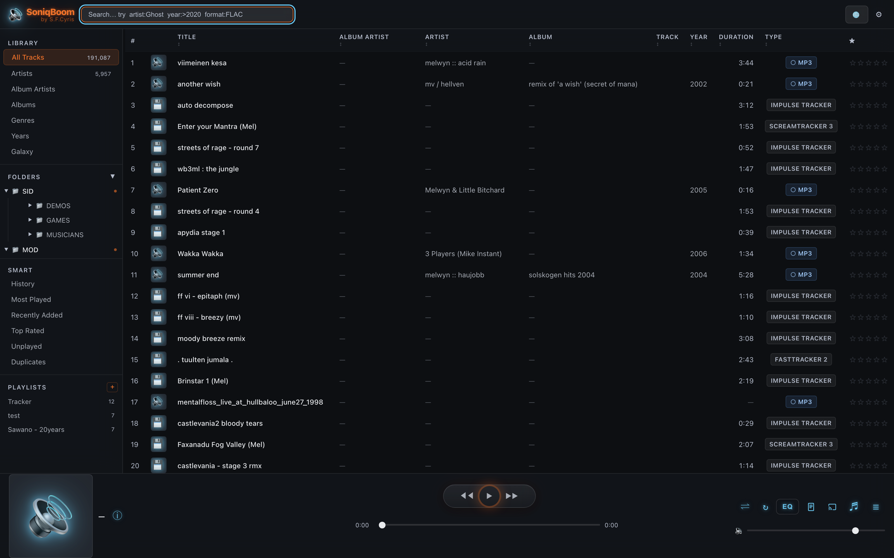
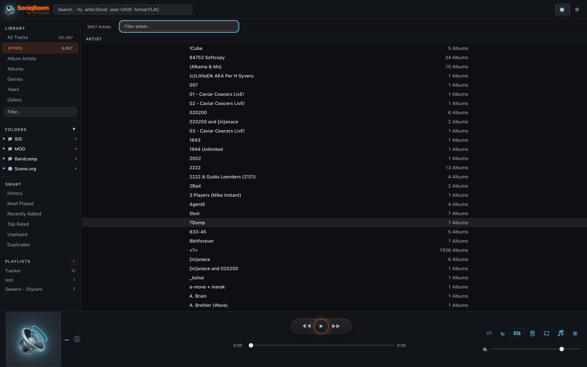
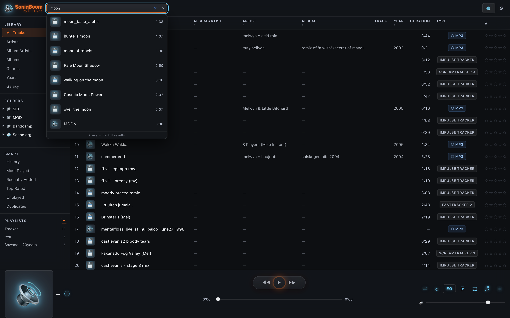
The Library Galaxy
Every track in your collection rendered as a drifting star-field — each format its own glowing constellation, sized by how much of it you own. The legend doubles as a census of your library.
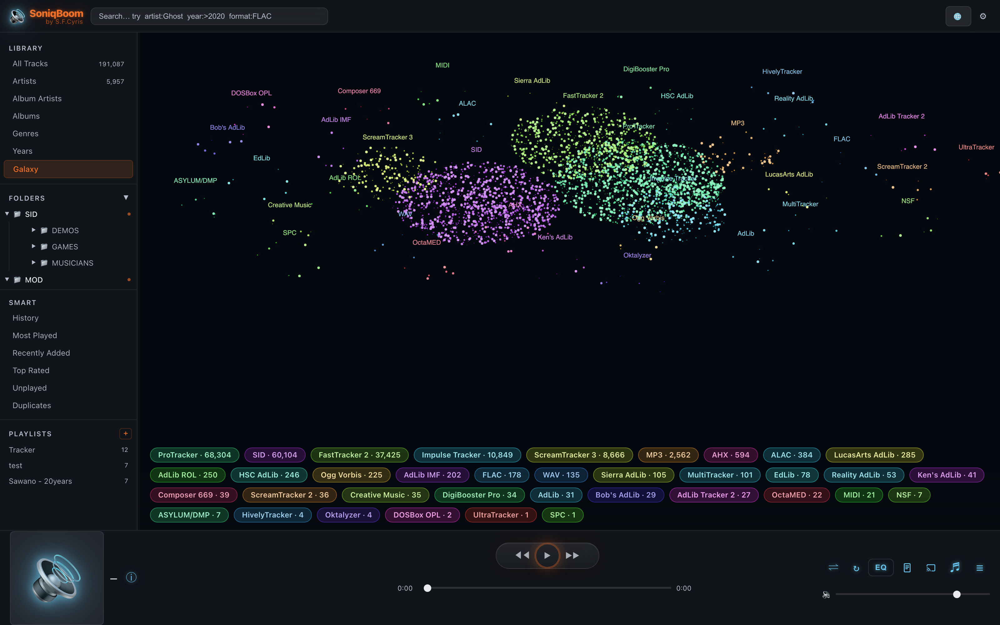
04Find anything
A search bar that understands field operators, and smart views that surface your library by listening habit.
Search with field operators
Type anything to search titles, artists and albums at once. Narrow it with field operators — stack as many as you like:
artist:Ghost album:Impera year:>2020 format:FLAC
| Operator | Matches |
|---|---|
artist: album: albumartist: | That field only. |
year:2003 · year:>2020 · year:<1990 | Exact year, or after / before a year. |
format:FLAC · format:SID | Restrict to one format. |
genre: composer: title: | Match those fields. |
artist:"The Ghost Inside" | Quote any value containing spaces. |
field:) is flagged in the preview instead of silently returning nothing.Smart views
The sidebar's Smart section builds these on the fly from your play history and ratings:
Listening History
Everything you've played, most recent first.
Most Played
Your highest play-counts, ranked.
Recently Added
The newest tracks the scanner found.
Top Rated
The tracks you've starred highest.
Unplayed
Everything you haven't heard yet.
Duplicates
Likely duplicate tracks, grouped for cleanup.
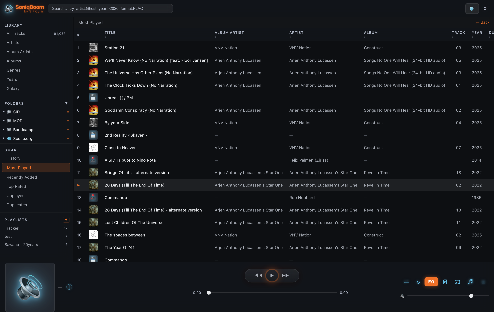
Instant Mix radio
Press the 📻 radio button in the player toolbar while anything is playing and SoniqBoom builds an endless queue around it — tracks picked by genre, artist, era, tempo and format, spread across artists. A SID radio stays chiptune, a FLAC radio follows the genre. The queue refills itself as you listen, seeded from whatever is playing now.
Radio view. Starting a radio opens a full radio view: the cover art large with a live oscilloscope playing across it, the track that's on, and the upcoming tracks with their covers — the list fades out at the bottom because more is always coming; click any entry to jump to it. Save as playlist keeps the mix. Leaving the view — Stop radio, Esc or the × — ends the radio; the tracks already queued keep playing.
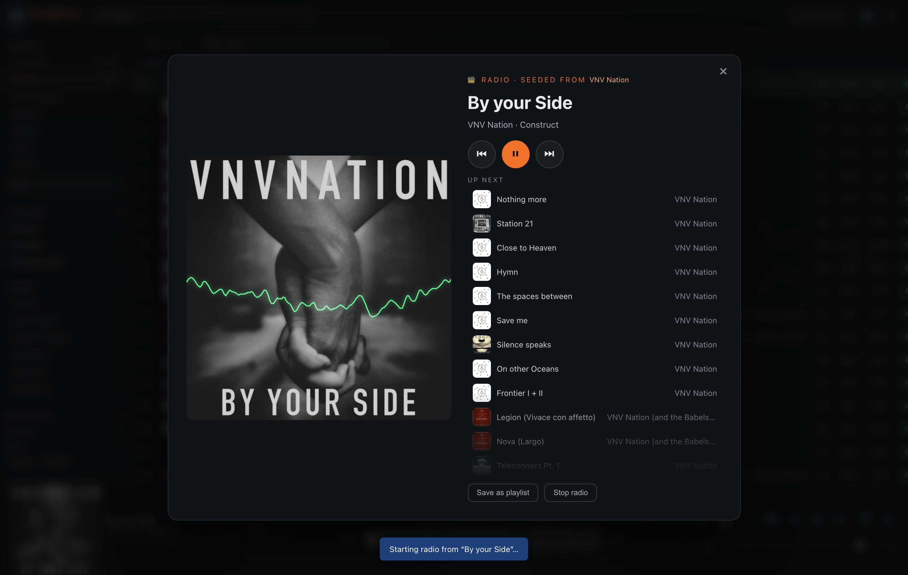
Internet radio stations
The sidebar's Stations section plays live internet radio. It has three lists:
- Favorites — the stations you've starred. Nectarine Demoscene Radio is there to start.
- Scene — a curated pack of demoscene, chiptune, SID and game-music stations (SceneSat, Nectarine, SLAY Radio, Kohina, Radio PARALAX, CVGM, Rainwave and more).
- World — the worldwide Radio Browser directory, browsed by continent → country, then split into Top 10, Top 11–50 and Remaining by listener votes.
Click a station to play it. SoniqBoom relays the stream through your server and starts at the highest quality your browser supports, stepping down automatically if the stream can't keep up. Stations that offer several qualities appear once, under one name. The player shows the station and the track that's on air; the ★ button adds or removes it from Favorites.
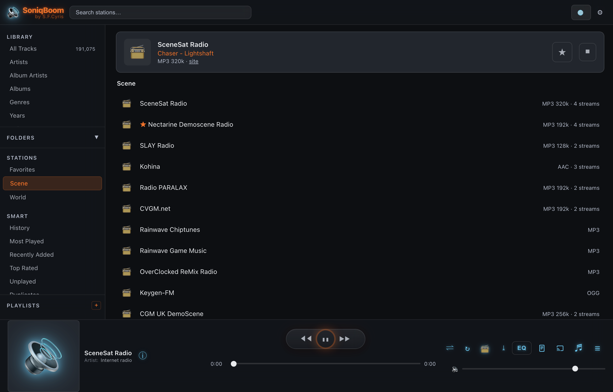
Station details. While a station plays, the ⓘ button in the player toolbar opens its details — tags, website, the live now-playing title, and every available stream with the one you're hearing marked.
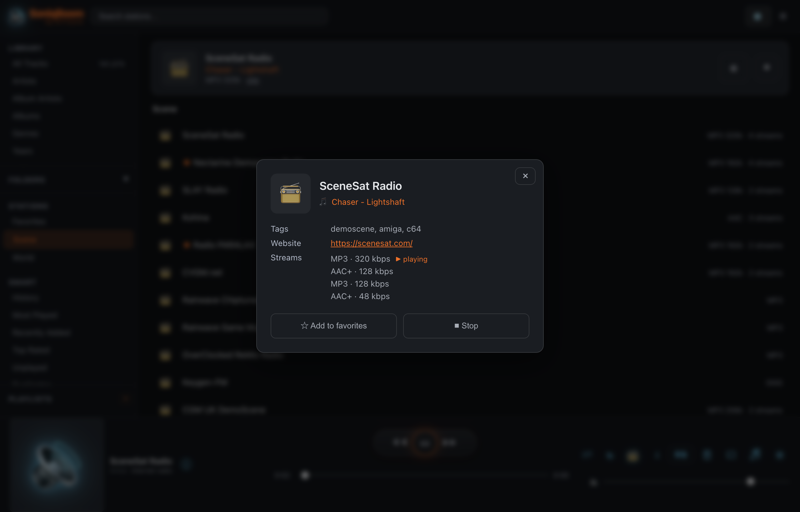
More like this
Select any track in the list and press the ◆ button in the player toolbar — a panel lists the closest matches with a relative similarity score. Tracks that have been played before are also compared by their loudness contour — songs that move the same way rank higher. Click a result to play it.
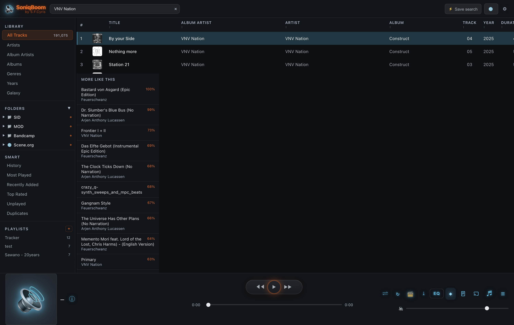
Smart playlists — save a search
Any search can become a playlist that keeps itself up to date. Type a query — say
format:SID year:>1988 — and press ⚡ Save search next to the search box.
Name it, and it appears under Playlists with a ⚡ marker. Opening it re-runs the
saved search, so new tracks that match are included automatically. Smart playlists work in
Subsonic apps too.
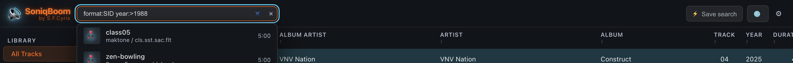
1988 typed and the Save search button visible in the header">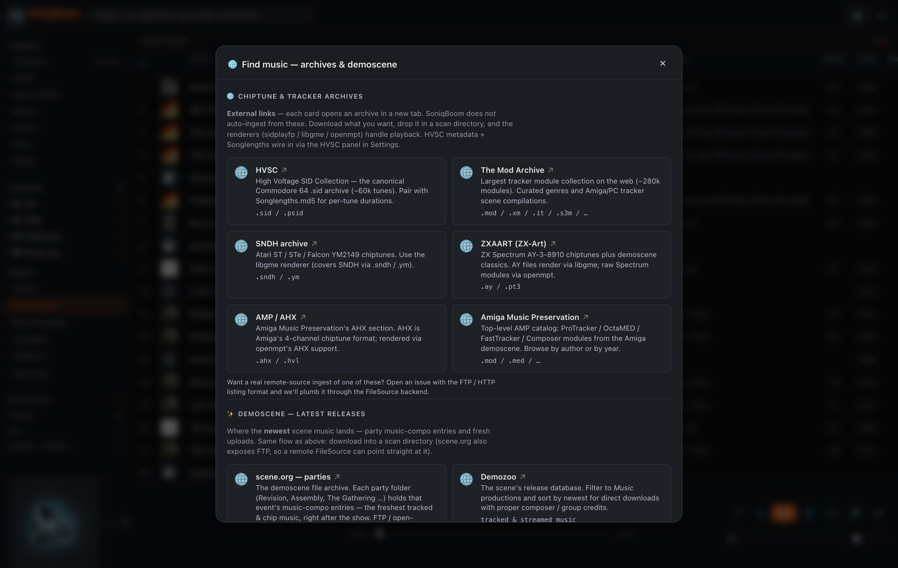
05Now playing
Click any track and it plays — even a 1987 SID tune or a 64-channel tracker module, rendered to audio on the fly.
Per-channel VU meters for tracker modules
Open any module and SoniqBoom shows a meter for every voice in the song — Paula channels, sample slots, OPL operators — dancing in real time, alongside the module's real metadata: channel and pattern counts, instrument names, and the embedded text messages trackers are famous for. A live signal path traces the exact decode chain for the playing track.
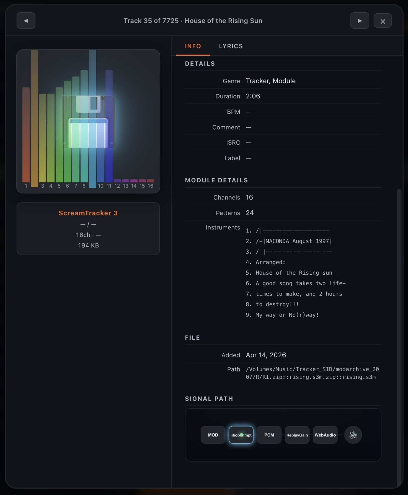
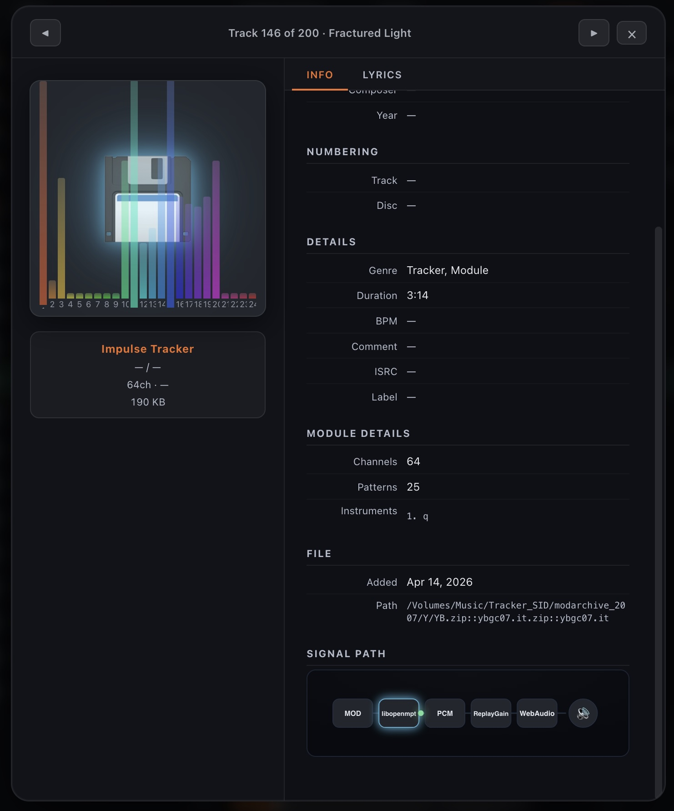
Equalizer & visualizer
A built-in graphic equalizer shapes the sound band by band — toggle it with E, and choose from a row of presets or drag the bands by hand. The full-screen visualizer cycles through several modes — oscilloscope, CRT, a scrolling spectrogram, and a neon synthwave grid — with V.
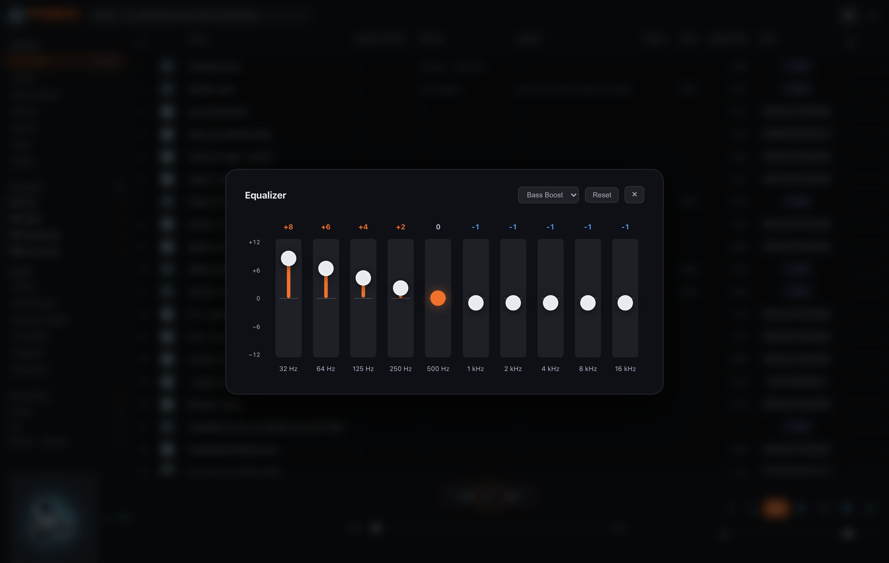
Time-synced lyrics
Lyrics scroll line-by-line with playback — read from the file's own tags, or fetched from LRCLib when the file has none embedded.
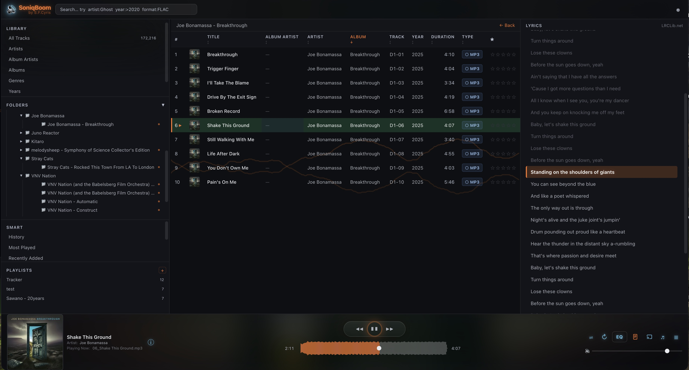
Podcast & audiobook chapters
For files that carry chapter marks — MP3 podcasts and .m4a / .m4b / .mp4
audiobooks — open the Track Info panel (the circled-i button) to see a
numbered Chapters list. Tap any chapter to jump straight to it.
About the artist & tag editing
The Track Info panel also shows an About the artist card — a short bio and portrait, with a link to the full article — whenever the artist has one. The artist is matched through MusicBrainz using the album and track you're viewing, and the bio comes from the matched artist's Wikipedia page: "Ghost" on an Impera track is the Swedish band, not the apparition. Below it, ✏️ Edit tags opens an inline form for title, artist, album, album artist, genre and year: Save tags writes the changes into the audio file itself and updates the library at the same time. Editing works on local files; tracks on network shares show the button disabled.
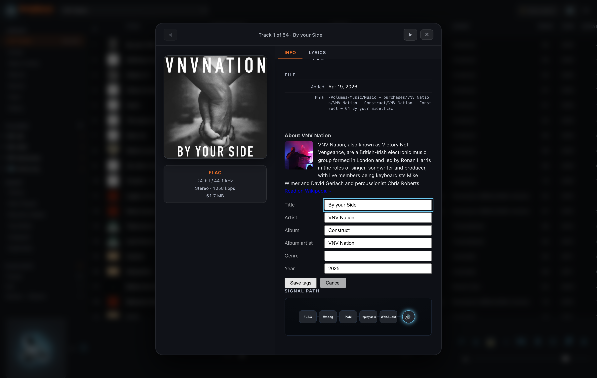
06Make it yours
Rate, queue and build playlists — and drive the whole player from the keyboard.
Ratings
Star tracks to score them; your ratings feed the Top Rated smart view.
Play queue
Toggle the queue with Q, reorder what's coming up, and queue tracks from any list.
Playlists
Build and edit your own playlists from the sidebar — add single tracks, whole folders, or search results.
Keyboard shortcuts
Press ? at any time to see this list inside the app. ⌘ is Command on macOS (the Super / Windows key elsewhere); ⌥ is Option / Alt.
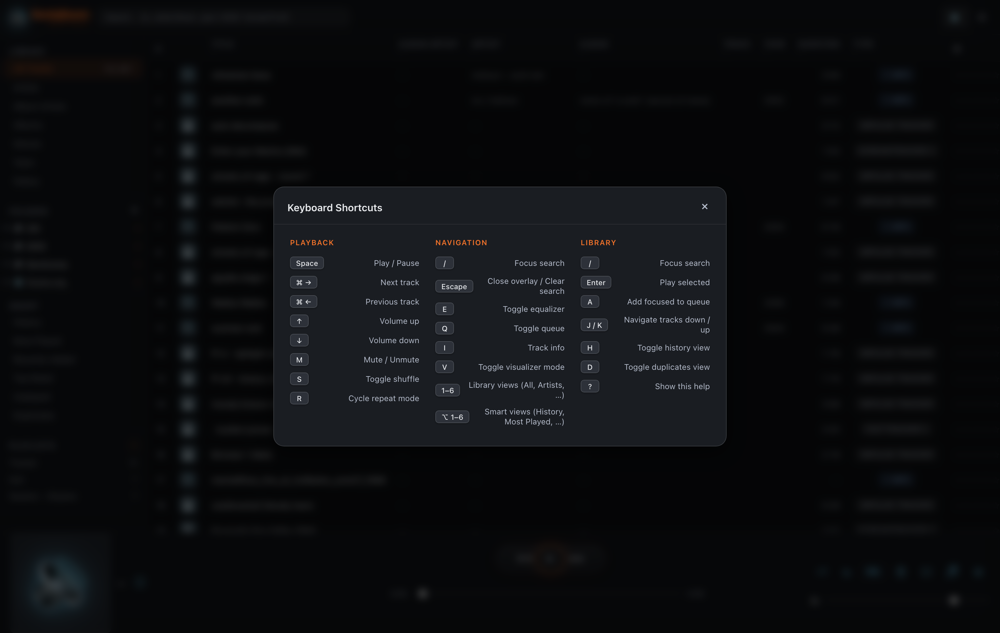
Playback
| Space | Play / pause | M | Mute / unmute |
| ⌘ → / ← | Next / previous | S | Shuffle |
| ↑ / ↓ | Volume up / down | R | Repeat (cycle) |
| Q | Toggle the queue | E | Equalizer |
| V | Cycle the visualizer | I | Track info |
Browse & select
| J / K | Move down / up the track list | Enter | Play the focused track |
| A | Add the focused track to the queue | / | Focus the search box |
| ? | Show this shortcut list |
Jump to a view
| 1–6 | Library views — All Tracks, Artists, Album Artists, Albums, Genres, Years |
| ⌥1–6 | Smart views — History, Most Played, Recently Added, Top Rated, Unplayed, Duplicates |
| H · D | Quick keys for History · Duplicates |
07Every format, at a glance
Forty-plus formats through one render pipeline. The reference addenda below tell each one's story.
| Family | Formats | Rendered by |
|---|---|---|
| Lossless / PCM | FLAC, ALAC (M4A), WAV, AIFF, WavPack, Musepack | native / ffmpeg |
| Lossy | MP3, AAC, Ogg Vorbis, Opus | native / ffmpeg |
| DSD (1-bit) | DSF, DFF, WSD | ffmpeg |
| SID (C64) | .sid, .psid | sidplayfp + HVSC Songlengths & STIL |
| MIDI | .mid, .midi | FluidSynth + SoundFonts |
| Tracker / module | MOD, S3M, XM, IT, MTM, MED, 669, DBM, ULT, STM, FAR, GDM, IMF, OKT, DSM … | libopenmpt |
| Amiga | AHX, HivelyTracker (HVL) | uade123 / bundled HivelyTracker engine |
| Console chiptune | NSF, NSFe, SPC, GBS, VGM, VGZ, AY, KSS, SAP, GYM, HES | libgme |
| AdLib / OPL2 FM | id IMF, ROL, CMF, D00, RAD, LAA, SCI, DRO, HSC, RIX … | AdPlug (adplay) |
ZIP archives are scanned and played inline — tracks inside .zip files
appear in your library without unpacking.
.dsf, .dff, .wsd)
play in any browser — SoniqBoom converts them to high-resolution PCM on the fly, and the library tags each
one by rate (DSD64, DSD128, DSD256, DSD512). High-resolution
PCM — 24-bit FLAC, WAV and the like — streams to the browser without re-encoding.08Casting Beta
Send what you're playing to a TV, speaker or receiver on your network.
- Press the cast button in the player toolbar.
- Pick a device from the list — discovered Chromecast, Apple TV / HomePod (AirPlay), and DLNA receivers appear together.
- Playback moves to that device. Even SID, MIDI and tracker tunes are rendered to standard audio first, so they cast like any FLAC.
- Some AirPlay devices show a PIN the first time you connect — type it into the pairing dialog to authorise SoniqBoom.
- Open Audio quality in the picker to choose: Auto (lossless when the device supports it, otherwise MP3 320), Original (no transcoding), FLAC (lossless transcode for every track), or MP3 320 (smallest bandwidth, widest compatibility).
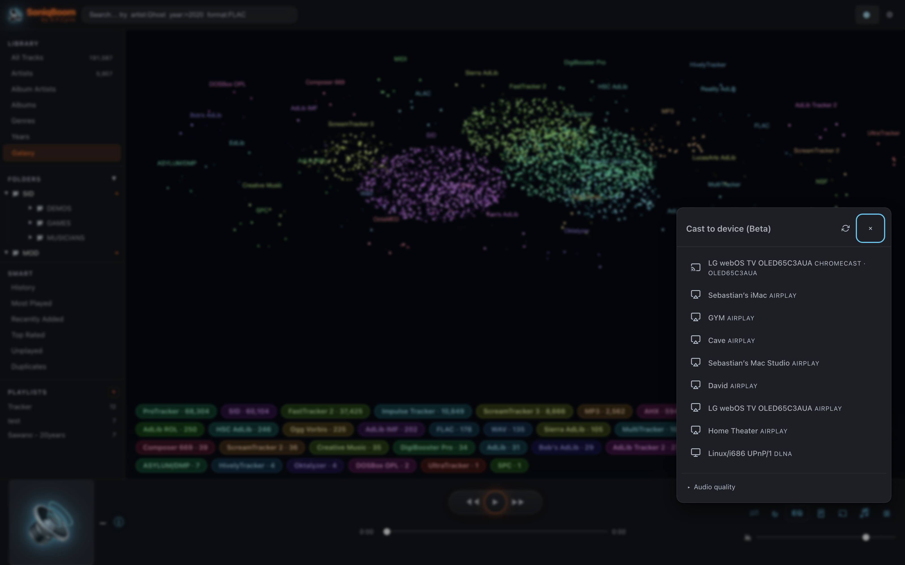
09Multi-room sync
Play the same music in step across the devices on your network — one device leads, the rest follow in lockstep.
SoniqBoom has a dedicated multi-room controller. Open it at /multiroom on your server — for
example http://localhost:8080/multiroom, or your server's own address. One device becomes the
master and drives playback; every other device joins as a listener and stays
in sync.
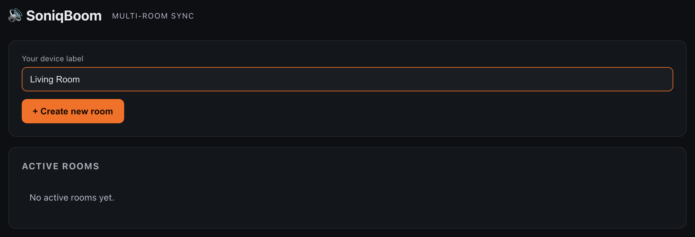
/multiroom — name your device, then create or join a room.Start a room — the master
- Open
/multiroomin a browser on the device that will lead. - Type a device label (for example Kitchen speaker).
- Click + Create new room, give the room a name, then Create & become master.
- As master you browse Tracks, Playlists and Albums, search, and control playback — play/pause, next/previous, shuffle and repeat. The Listeners panel shows every device that has joined.
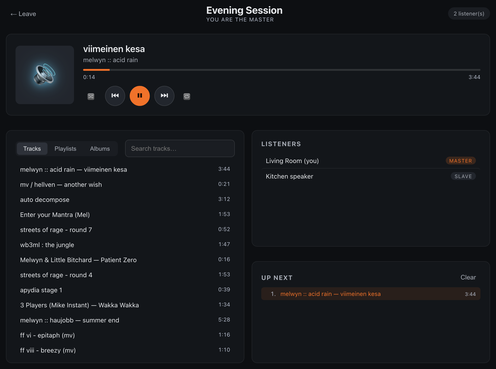
Join a room — a listener
- Open
/multiroomon another device and type a device label. - Pick the room under Active rooms — you join as a listener and follow the master in sync, with a live sync-drift meter on screen.
- Press Leave to drop out. If a room has no master (the leader left), the next device to open that room becomes the master.
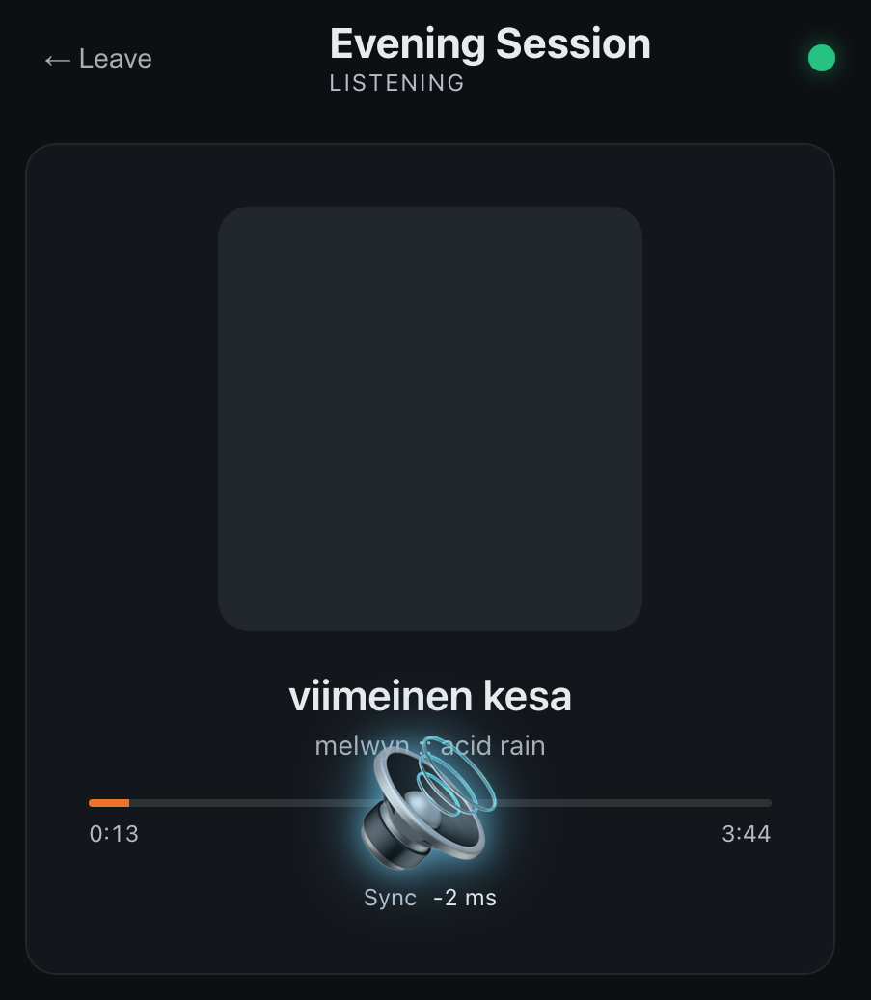
10Listen anywhere
Subsonic apps
SoniqBoom speaks the OpenSubsonic API. Point Amperfy, Symfonium, DSub or Feishin at your server's address and sign in with your SoniqBoom username and password.
Installable PWA
Add SoniqBoom to your home screen or dock for a full-screen, app-like experience, online or off.
On your phone
Open SoniqBoom on a phone and it adapts automatically — the full player works at phone width, and on phones the site also serves a dedicated touch-first shell with Library, Search, Queue, Now Playing and Settings tabs plus a tap-to-expand mini-player. A Desktop site link switches to the full desktop UI whenever you want it. Casting is reachable from the mobile mini-player too (Beta).
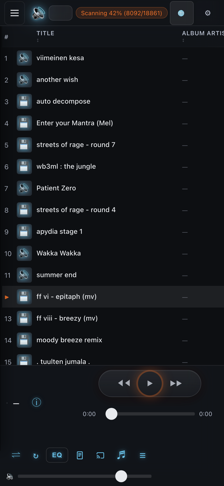
Take it offline
Press the ⤓ download button in the player toolbar to keep the current track on the device you're using — it plays even with no connection to the server. The button lights up on tracks you've downloaded; press it again to remove the copy. Everything else streams exactly as before.
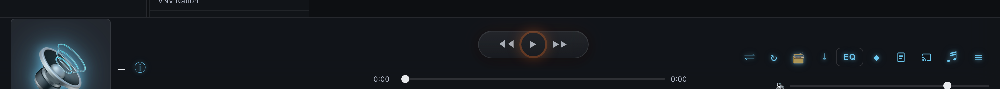
Multi-user accounts and roles, last.fm and ListenBrainz scrobbling, and a light/dark theme are all built in — see Manage your library & users and Settings.
11Manage your library & users
Add network shares, keep the index fresh, back up your data, and decide who can do what — all from the admin panel (gear icon, top-right).
Add a network share — FTP, SMB or WebDAV
In the admin panel's Music Folders section, switch from Local Path to the Network Share tab and pick a protocol:
| Protocol | You enter |
|---|---|
| SMB | Host, share name and path — with a username and password, or tick Guest access. |
| FTP | Host and remote path — with a username and password, or tick Anonymous. |
| WebDAV (http / https) | A base URL — with a username and password, or tick Public (no auth). |
Add an optional alias, click Test to check the connection, then + Connect — SoniqBoom attaches the share with no operating-system mount required and scans it straight away.
Keep your library fresh
Local folders are watched automatically — files you add, change or remove are picked up within a couple of seconds. Network shares are re-checked on a periodic background poll, and you can force one with the Check now button on a remote folder. To rebuild everything by hand, use ↻ Rebuild Index; to re-scan a single folder, use its Re-Index button. While a scan is running you can Pause it and later Resume from where it left off — handy for easing server load during busy listening.
Back up & restore
The admin panel's Backup tab exports your whole database to a single date-stamped file
(soniqboom-YYYY-MM-DD.sbz) — a compressed snapshot of your track index and metadata, waveforms,
star ratings, play counts, playlists, listening history, your scan-folder list and library settings.
Import .sbz restores it; it replaces the current library data and asks you to confirm first.
User accounts & roles
Manage people in the admin panel's Users tab — add a user, set their role, enable or disable them, set a password, or remove them. Three roles decide what each person can do:
| Capability | Read-only | Edit | Admin |
|---|---|---|---|
| Browse & play the whole library | ✓ | ✓ | ✓ |
| Rate tracks & build play history | ✓ | ✓ | ✓ |
| Create & manage playlists | — | ✓ | ✓ |
| Manage users, folders, settings & backups | — | — | ✓ |
New accounts come from two places: an admin adds them in the Users tab with a role, or a visitor signs themselves up from the login screen — self-registered accounts are always Read-only until an admin promotes them.
Reset a password or recover access
Run this on the server host to set any user's password — it's also how you create the very first admin on a fresh install:
.venv/bin/soniqboom-setadm -user alice -passwd 'a-new-password'
.venv/bin/soniqboom-setadm -user alice -passwd 'a-new-password' -role admin # also make them an admin
System notes
12Settings & integrations
Open the admin panel with the gear icon (top-right) to connect outside services and tune the extras.
SoundFonts for MIDI
Open gear → Renderers → Soundfonts. Click ↑ Upload .sf2/.sf3 to add your own bank, or pick one from Download Known Soundfonts for a one-click install. Select an installed bank to make it the active MIDI voice.
HVSC for SID
Download the High Voltage SID Collection, then in gear → Renderers → HVSC SID database paste the path to its DOCUMENTS folder and click Save & reload — every SID gains its exact per-tune length and STIL credits.
Scrobbling
In gear → System → My Account, paste your ListenBrainz user token (from listenbrainz.org/profile) and/or your last.fm session key. Plays are logged automatically once a token is saved.
Subsonic apps
Subsonic apps sign in with your SoniqBoom username and password — there's no separate Subsonic password. Copy your server URL from gear → System → Subsonic / OpenSubsonic API, then see Listen anywhere.
Optional services
The System → Services panel turns each network service on or off — OpenSubsonic API, Multi-room, Cast Beta and the DLNA Media Server Beta (off by default). Changes take effect after a server restart.
Library display
Under System → Settings you can hide duplicate copies (in search and/or folder views), hide empty folders, choose which filenames count as folder art, and toggle ZIP-archive scanning.
Theme
Switch between dark and light under gear → System → Settings → Theme; your choice is saved in the browser and applies instantly. (You can also change your own password here.)
Conversion cache
Rendered chiptune and transcoded audio are cached for instant replay. Adjust the size from 256 MB to 100 GB in gear → Renderers → Transcode & render cache.
13Troubleshooting
The handful of things people ask about first.
A track is listed but won't play
Its renderer isn't installed. Re-run bash install.sh (it installs them all), or install the one
package SoniqBoom names in the error — sidplayfp, fluidsynth, libopenmpt,
uade, libgme or adplay. Everything else keeps working in the meantime.
A SID tune shows the wrong length
Configure HVSC in Settings — without it, SID durations fall back to an estimate.
MIDI sounds thin or silent
Install or select a SoundFont in Settings; MIDI is synthesised from the active .sf2 bank.
I'm locked out / forgot the admin password
On the server host, reset any account from the command line:
.venv/bin/soniqboom-setadm -user <name> -passwd '<new password>'
(add -role admin to restore admin rights). See Manage your library & users.
A network share won't connect
In the admin panel's Music Folders → Network Share form, use Test before connecting — it reports the exact connection error. Check the host, share name / path and credentials, and that the server can reach the share on your network.
A cast device doesn't appear
It must be on the same Wi-Fi / LAN as the server, and casting is in Beta — behaviour varies by device. Wake the device, then use the picker's Search again button.
The app didn't change after an upgrade
SoniqBoom is an installable PWA, so the browser may still be serving a cached shell — reload the page (or remove and re-add the installed app) to fetch the new version.
14Reference library
Three illustrated histories of the music SoniqBoom plays — where every format came from, and why it sounds the way it does.
A Field Guide to Music Formats ▸
From FLAC and DSD to SID, MIDI and OPL FM — the origin, hardware and codec behind every format, with reference links.
🎛️The Tracker Lineage ▸
Soundtracker to Impulse Tracker — the Amiga birth of module music, the PC tracker explosion, and the demoscene.
🕹️Music in Retro Gaming ▸
How game soundtracks were made, chip by chip — NES, C64, Genesis, Game Boy, SNES, MSX and DOS.